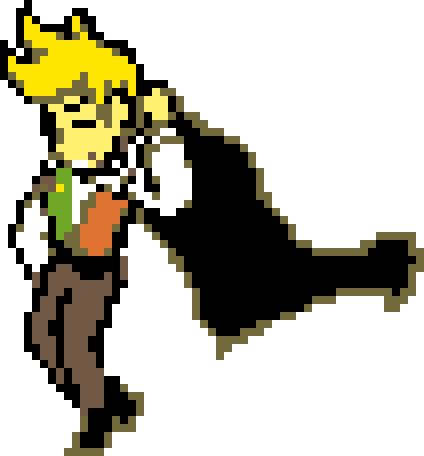

Flowery is a major antagonist in Deltarune,
serving as the theatrical, white-knight final boss of Chapter 5.
He is the Dark World manifestation of a golden flower from Asgore and
Toriel's old wedding bouquet, brought to life with a twisted obsession to
reunite them and create a "perfect world" for Asgore.